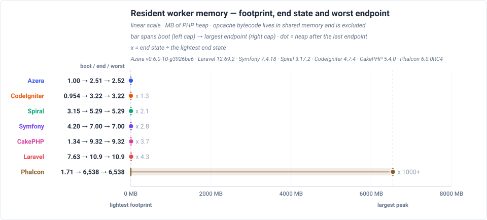

Feature benchmarks
GET /api/routing/1 — matches a typed route and dispatches it to a constant handler — no template and no database access — so the band measures route matching and dispatch and nothing else. The endpoint sits in a deep bucket of the route table, which is where a compiled index actually saves work. `/echo` is drawn beside it: the same constant handler behind a STATIC route, i.e. the floor that route matching is measured against — and, like any floor, it is mostly the SERVER rather than the framework. Measured 2026-11-24 with `temp/echo-ab.php` on the bench VM, the entire framework layer on `/echo` costs single-digit microseconds, inside rows that print two to three orders of magnitude more. A difference of a few microseconds there is below the run-to-run spread, so read `/echo` as the common floor and NOT as a comparison between entrants; the charts that separate frameworks are the ones with real work in them.

GET /items — loads one page of the 1,000 seeded rows through each framework's ORM / Active Record layer: 20 items plus a COUNT for the pagination total. The `-fast` band repeats that page with hydration switched off, so the cost of building one object per row can be read directly instead of inferred.

GET /api/items — serves the same page of items as a JSON response rather than HTML, which adds serialization to the ORM work. The `-fast` band repeats that response with hydration switched off, so serialization cost and hydration cost can be told apart.

Latency by endpoint (ms, median — lower is better) — the worker is never recycled (one long-lived worker), so each number is the measured request with no boot in it
| Request | Workload | Azera | Laravel | Symfony | Spiral | CodeIgniter | CakePHP | Phalcon 6 (RC) |
|---|---|---|---|---|---|---|---|---|
GET /api/routing/1 | no DB — typed route + constant body (routing only) | 0.159 | 0.336 | 0.244 | 0.660 | 0.537 | 0.242 | 0.182 |
GET / | no DB — routing + template only | 0.175 | 0.427 | 0.340 | 0.680 | 0.680 | 0.315 | 0.208 |
GET /echo | no DB — static route, constant body (throughput floor) | 0.155 | 0.351 | 0.252 | 0.631 | 0.507 | 0.248 | 0.179 |
GET /items | 20 of 1000 items (page 1, + COUNT) | 0.284 | 0.918 | 0.844 | 0.952 | 1.02 | 0.768 | 0.662 |
GET /items-fast | 20 of 1000 items (page 1, + COUNT), hydrated rows not built | 0.274 | 0.765 | 0.787 | 0.906 | 0.974 | 0.699 | 0.602 |
GET /items/1 | 1 item by id | 0.208 | 0.669 | 0.496 | 0.815 | 0.916 | 0.630 | 0.368 |
POST /items | 1 row upserted (sentinel #999999) | 0.270 | 0.836 | 0.588 | 0.987 | 1.03 | 0.802 | 0.547 |
GET /items-qb | 20 of 1000 items (page 1, + COUNT) | 0.267 | 0.675 | 0.506 | 0.759 | 0.972 | 0.587 | 0.329 |
GET /items-qb/1 | 1 item by id | 0.236 | 0.579 | 0.366 | 0.752 | 0.899 | 0.501 | 0.240 ≈ |
POST /items-qb | 1 row upserted (sentinel #999997) | 0.292 ≈ | 0.702 | 0.429 | 0.822 | 1.08 | 0.606 | 0.288 |
GET /api/items | 20 of 1000 items as JSON | 0.255 | 0.784 | 0.480 | 0.813 | 0.839 | 0.501 | 0.361 |
GET /api/items-fast | 20 of 1000 items as JSON, rows not hydrated | 0.221 | 0.521 | 0.459 | 0.756 | 0.846 | 0.505 | 0.423 |
GET /api/items/1 | 1 item by id as JSON | 0.206 | 0.603 | 0.440 | 0.746 | 0.835 | 0.505 | 0.378 |
POST /api/items | 1 row upserted (sentinel #999998) | 0.240 | 0.731 | 0.469 | 0.904 | 0.881 | 0.668 | 0.482 |
GET /features/aop-tx | 1 row upserted (sentinel #888800) | 0.221 | — | — | — | — | — | — |
GET /features/aop-tx-direct | 1 row upserted (sentinel #888800) | 0.218 | 0.487 | 0.316 | 0.756 | 0.918 | 0.486 | 0.245 |
GET /features/aop-tx-explicit | 1 row upserted (sentinel #888800) | 0.226 | — | — | 0.799 | — | — | — |
GET /features/aop-cache | COUNT(*) of 1000 rows, cached 10s by #[Cache] (miss = query) | 0.177 | — | — | — | — | — | — |
GET /features/aop-cache-direct | COUNT(*) of 1000 rows, cached 10s by hand (miss = query) | 0.174 | 0.332 | 0.231 | 0.650 | 0.592 | 0.292 | 0.189 |
GET /features/log | no DB — one in-memory log sink per entrant | 0.166 | 0.446 | 0.233 | 0.706 | 0.646 | 0.287 | 0.188 |
GET /features/db-events | 1 row upserted (sentinel #888800) + COUNT(*), events collected | 0.226 | 0.601 | 0.543 | 0.937 | 1.01 | 0.621 | 0.263 |
GET /features/events | no DB — in-process listeners | 0.220 | 0.501 | 0.390 | 0.806 | 0.945 | 0.512 | 1.86 |
GET /features/validation | no DB — validator run | 0.185 | 1.06 | 0.488 | 0.735 | 0.864 | 0.460 | 0.221 |
GET /features/config | no DB — config lookup | 0.177 | 0.375 | 0.274 | 0.684 | 0.587 | 0.271 | 0.184 |
GET /features/rate-limit | no DB — cache-backed limiter | 0.177 | 0.355 | 0.283 | 0.693 | 0.605 | 0.280 | 0.183 |
GET /features/lifecycle-hooks | no DB — a request/response hook stamps a header and sets 203, via each framework's own mechanism | 0.177 | 0.318 | 0.268 | 0.661 | 0.615 | 0.282 | 0.181 ≈ |
Server floor — real volucer attach over loopback: a bare resident worker that renders a fixed string (floor-volucer-attach) measures the IPC + server floor every row below also pays. Only differences larger than this floor are framework differences.
Full comparison
This page is a summary. The complete report, with every feature chart and the endpoint table for all six frameworks, is published at: